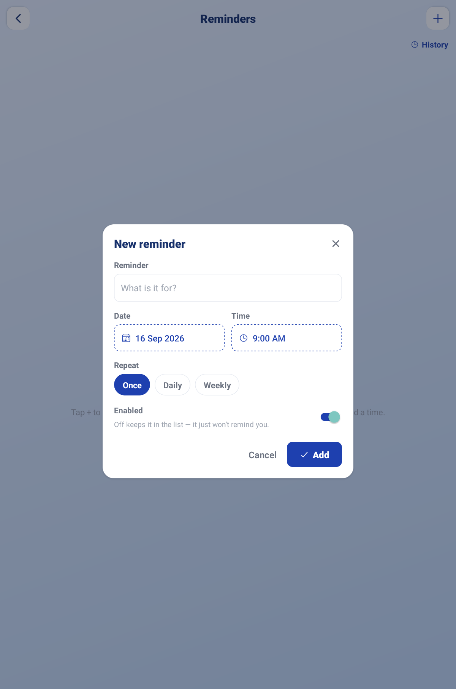
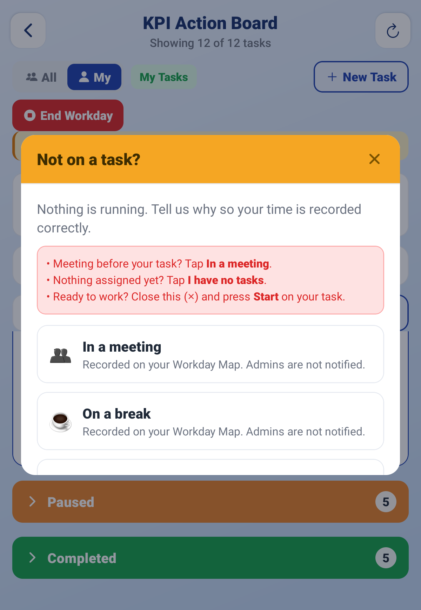
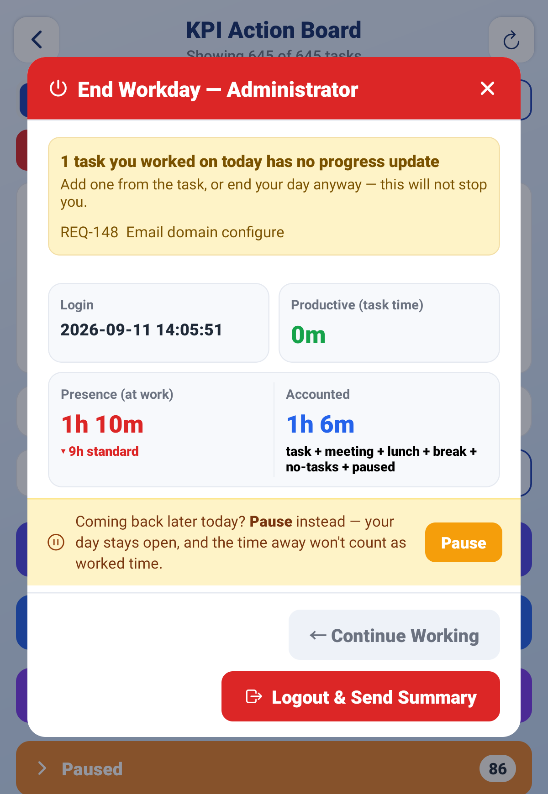
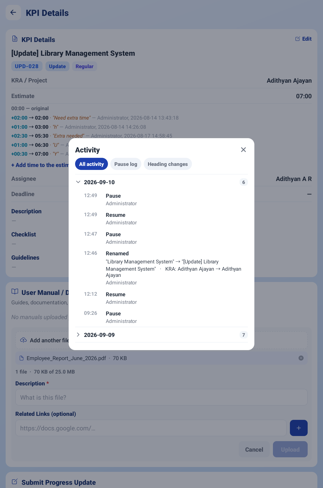

Sign-in screen — mobile number field with the dial code and the Continue button
Start your workday, work your tasks on the Action Board, and end your day.
The KRA / KPI app is where you pick up your work, record the time you spend on it, and hand it back when it is done. Everything you do sits on one screen — the KPI Action Board.
There is one rule that explains almost everything in this app: you must start your workday before you can touch a task. Until you tap Start Workday, the app is read-only. Once you tap End Workday, it is read-only again until tomorrow. Everything in between is your working day, and the app measures it for you.
This guide walks you through everything you do, in the order you will do it.
| IMPORTANT The app measures your day from the moment you tap Start Workday to the moment you tap End Workday. If you forget to start, your day is not recorded — and you will not be able to work on anything. |
On your phone, open the KRA KPI app. You will see a short animation, then a welcome card. Tap Tap to Enter Login Page.
The sign-in screen greets you with Welcome back. Your country dial code is already filled in — type the rest of your mobile number and tap Continue.
Use the same number your admin registered you with. If you see “This number is not registered. Please contact your admin to register this number,” your number has not been added yet — ask your admin.
|
Sign-in screen — mobile number field with the dial code and the Continue button |
Type your password and tap Log In.
The first time you ever log in, your password is 1111. The app will show a red warning telling you so, and asking you to change it. Do that straight away — tap Forgot password? and follow Step 4.

Password screen showing the red “your password is still the default 1111” warning |
Tap Forgot password?. A 4-digit code is sent to you on WhatsApp. Type the code, type your new password twice, then tap Verify & Set Password.
If the code does not arrive, tap Resend code — there is a short wait before you can ask again, shown as “Resend in 8s”.
| TIP You can change your password at any time later from the Profile tab, using the same WhatsApp code. You do not need your admin. |
You land on the Home screen. From the top down:
As a User you have five tiles: KPI Action Board, Reminders, My Workday, My Snapshots and User Manual.
Once your workday is running, a live card sits between the greeting and Your Tasks, so you can see what you are working on without opening the board:

Home screen — greeting, Your Tasks counters, and the Quick Actions tiles |
| TIP You can choose which tiles appear on Home, and drag the menu items into the order you like. Use Edit Quick Actions on the Home grid, or the pencil in the side menu. The menu always lists every tile you are allowed to see, so hiding one from Home never loses it. |
Before you start your day, a red bar sits at the top of Home:
“Read-only — everything except Profile. Start your workday to work on tasks.”
This is not a fault. You can look at anything, but you cannot start, pause or complete a task until your day is running. The action buttons on your task cards are hidden entirely while you are in read-only.
Tap Start Workday. The red bar disappears, your task buttons appear, and the app begins measuring your day.
The button changes as your day goes on:
| Button says | What it means |
|---|---|
| Start Workday | Your day has not begun. Tap it to begin. |
| End Workday | Your day is running. Tap it when you are finished for the day. |
| Workday ended for today | Greyed out. You have already ended today. You get one start and one end per day. |
| Start New Workday Session | Your day was left running and the system closed it automatically (at midnight). Tap it to start working again — the new wording tells you the earlier session was cut, so the hours on it will be short. |
| Reopen and Continue Workday | An admin has reopened a day you had ended. A banner shows who reopened it and why. Tap it to carry on. |
Once your day is running, a LIVE strip appears at the top of the Action Board. It tells you, second by second, what the app thinks you are doing:
| What you see | What it means |
|---|---|
| Working: “task name” with a running clock | This task is active and its time is counting up. |
| Multi-tasking 3 tasks | You have more than one task running at once. Time counts on all of them. |
| Pause all (3) | One tap to pause every running task — useful when you step away. |
| A break pill (for example Break or Lunch) | You are on a recorded break. No task time is counting. The pill names the task the break came from and how long you have been away. |
| Presence 04:12:30 · Productive 03:20:05 | Presence is your time at work — the clock since you started your day, minus any time you paused it. Productive is the part of that you spent on tasks. |

The LIVE strip on the Action Board — running task, timer, Presence and Productive |
While you are on a break, the pill gives you one-tap ways out of it:
From Home, tap KPI Action Board. Your tasks are grouped into columns called lanes. Every task sits in exactly one lane, and a task moves between lanes on its own as you work on it.

KPI Action Board — the lanes with task cards, and the status filter at the top |
| Lane | What it means for you |
|---|---|
| 🕔 Today | What you have worked on today, most time first. It is indigo because it is not a stage work moves through — it is a shortcut for finding a task again. A task you touched today appears here as well as in its own status lane, so seeing the same card twice is correct, not a fault. The lane empties itself at midnight. |
| Pending Review | A task you created yourself that an admin has not yet accepted. You can still work on it. |
| Regular | Not started yet, normal priority. |
| Important | Not started yet, marked important. |
| Urgent | Not started yet, marked urgent. Do these first. |
| In Progress | Running right now. Time is counting. |
| Paused | You stopped the clock. Tap Resume to pick it back up. |
| Pending Approvals | You finished it and an admin is checking it. Nothing for you to do unless it comes back. |
| Awaiting Client | The admin approved it and the client is signing off. Nothing for you to do. |
| Completed | Finished and signed off. Done. |
Use the filter at the top of the board to show one lane at a time — choose All Statuses to see everything again.
How the board is ordered:
| TIP Search finds a task by its reference however you type it — req148, REQ-148 and 148 all find REQ-148. |
Find your task card and tap Start. The card moves to In Progress and its clock begins. Tap the card itself at any time to open KPI Details and read the full description, estimate and history.
When you pick a paused task back up, the card shows a second clock, Resumed, counting how long it has been since you came back to it — for example after a break or after lunch.

A task card with its buttons — Start, Remind me |
If a task is going to take longer than its estimate, do not just run over it — say so. Open the task and tap + Add time to the estimate, enter how much longer you need and why. The extension is recorded against the task with your name on it.
The card then explains its own overrun: it shows the reason you gave, how many times the estimate has been extended, and who extended it last. Nobody has to go digging through an audit log to find out why a task ran long.
When you stop working — a break, lunch, a meeting, anything — tap Pause and pick the reason. This is how your day adds up correctly at the end.
| Reason | Use it when |
|---|---|
| 🔀 Moved to another task | You have not stopped working — you are moving to a different task. This is the first chip and the one already selected, because it is the commonest reason. Do not use Break for this: it would file real work time as a break. |
| ☕ Break | You are stepping away briefly. |
| 🍽 Lunch | You are on your lunch break. |
| 👥 Meeting | You are in a meeting. The dialog asks Who is it with? (pick the people) and What is it about? — both are saved to your Workday Map. |
| 🌙 Day End | You are stopping for the day. This labels the pause only — your workday stays open until you tap End Workday. |
| Waiting for Approval | You cannot go further until someone approves something. |
| Technical Issue | A blocker is stopping you — a broken build, no access, a server down. |
| Leave | You are going on leave. |
| ✍ Other | Anything else. You must type a short note. |
| 🚨 Urgent | An emergency pulled you off. You must type a short note, and your admins are told immediately. |
Pause all offers the same ten reasons. On a small screen the dialog scrolls, so Confirm Pause is always reachable at the bottom.
| TIP Keep pause notes short — they are printed on your Workday Map at the end of the day. |

The Pause reason picker with the emoji quick-pick buttons and the note box |
If you are moving straight from one task to another, tap Switch instead of Pause. It stops this task and records what you moved to, in one step. If you have several tasks running at once, Switch only stops this one — the others keep counting.
The Switch to another task list puts the task you worked on most recently at the top, in two groups: Paused — pick back up and Not started yet, each with its count.
Switching between a task, a break, lunch or a meeting always asks first. The confirm box, Switch to …?, shows what ends now and what starts now, and reassures you: “… is saved to your Workday Map. Nothing is lost.” Switching to a meeting also asks who was there and what it is about.
If an admin sends back a task you created yourself, tapping Resume on it opens Respond & Resume instead of resuming straight away. It quotes the admin’s note (“<admin> sent this back:”) and asks What did you change? (required).
Type what you fixed and tap Respond & Resume. Your answer goes back to the admin, the acceptance clock starts again, and the task starts running.
When the work is genuinely finished, tap Complete. A checklist appears. Tick each item honestly — this is what the admin reviews:
The task moves to Pending Approvals, where an admin checks it. If they approve, it goes to the client for sign-off. If they send it back, it returns to you with a reason.

The Complete checklist with its five tick items |
Use Partial Finish when you have done as much as you can but the task is not fully closed — you are waiting on someone else, or only part of the scope is deliverable now.
| IMPORTANT On the board, a partially finished task shows as Verification Pending. That is the same thing — do not go looking for a lane called “Partial”. |
A dimmed button is still tappable. Tap it and the app tells you exactly what it is waiting for. It is never broken — it is always waiting for something:
| Message | What to do |
|---|---|
| Start your workday to work on tasks | Tap Start Workday on Home. |
| Resume your workday to work on tasks | Your day is paused. Tap Resume. |
| Waiting on admin — accepts automatically at 14:35 | Nothing. It unlocks itself at that time, or sooner if an admin accepts it. |
| Waiting for an admin to accept this task | Nothing. Ask an admin if it is urgent. |
| Client put approval on hold | The client paused the decision. Your admin can chase it. |
| Waiting on client — releases at 16:00 | Nothing. It unlocks itself at that time. |
| Waiting for the client to approve | The client has not decided yet. |
If you are doing work that nobody has raised a task for, create one yourself. Tap New Task on the Action Board and fill in:
Your task lands in Pending Review. You can start working on it immediately — you do not have to wait. But an admin still has to accept it before it counts as billable work.
If the admin sends it back, you get a note explaining why, for example “Wrong project — move it under Alphalize > Phase 2.” Fix it and it goes round again.
Tap Remind me on a task card to open Remind me about this task. You can:
Tap Set. To cancel it later, open the same sheet and tap Clear reminder.
If the phone cannot ring the alarm (for example the alarm permission is off), the app says so plainly — “Reminder set, but it will not ring” — rather than letting you rely on it.

The “Remind me about this task” sheet — Quick timers chips, reason box, Set button |
The alarm takes over your whole screen — even on the lock screen — with the title ⏰ Time to wrap up and the line “Your set time for this task is up.” Your reason is shown under REASON.
Tap ■ STOP to silence it and open the task, or Snooze to be reminded again in a few minutes.
| Button says | What it means |
|---|---|
| Remind me | No reminder set on this task. |
| 🔔 3:05 PM | A quiet notification reminder is set for 3:05 PM. |
| ⏰ 3:05 PM | A full alarm is set for 3:05 PM — it will ring out loud. |
| 😴 Snoozed 3:05 PM | The alarm already rang and you snoozed it until 3:05 PM. |
| TIP Alarms use your phone's own alarm sound and volume, so they are heard even when your phone is on silent. You can choose the sound from your phone's ringtone picker. |
Not every reminder belongs to a task — “call the client at 4”, “submit timesheet every Friday”. For these, tap the Reminders tile on Home, then +. Fill in the New reminder box:
| Field | What to put in it |
|---|---|
| Reminder | What it is for. |
| Date and Time | When it should go off. |
| Repeat | Once, Daily or Weekly. |
| How it reminds you | 🔔 Notify for a notification, or ⏰ Alarm to ring full-screen like a task alarm. |
| Enabled | Switch it off to keep the reminder without it going off — “Off keeps it in the list — it just won't remind you.” |
Tap Add. Each reminder in the list has Done, Edit and Delete, and an on/off switch. When you have both kinds, the list is grouped under Alarm and Notify. History (top right) shows every reminder you have marked done — even after the reminder itself is deleted.
An Alarm reminder rings full-screen with “This reminder is due now.” and the same STOP and Snooze buttons as a task alarm. Snoozing does not move the reminder’s saved time.
|
 Reminders — the New reminder box with Date, Time, Repeat and Enabled, and the History link at the top |
| IMPORTANT Reminders are set on your phone each time you open the app. Logging out cancels them on that phone — log back in and they are set again. After your phone restarts, open the app once so they are set again. |
If your workday is running but no task is active, the app asks Not on a task? — tell it what you are doing so the time is recorded properly instead of counting as unexplained idle time:
The popup gives you the same advice: “Meeting before your task? Tap In a meeting. Nothing assigned yet? Tap I have no tasks.”
Choosing In a meeting asks who is in it — pick the people, then tap Start meeting with N (or Start meeting if you skip it). The names are kept on your Workday Map.
|
 The “Not on a task?” popup — In a meeting and On a break, each recorded on your Workday Map |
| IMPORTANT Choosing I have no tasks tells your admins immediately — the popup says so: “Your admins will be told straight away.” That is the point. It is how you get work assigned, not something to avoid. |
Pause Workday freezes your entire day without ending it. Use it when you leave for a long stretch but will be back.
| WHERE IS IT? Pause lives inside the End Workday popup, not on the board. Tap End Workday and look at the amber strip near the bottom: “Coming back later today? Pause instead.” It sits next to End on purpose, because that is the moment you are choosing between stopping for now and stopping for good. |
A banner then explains what is happening:
“Your workday is paused. Tasks can't be started, and paused time won't count as worked time. Tap Resume when you're back.”
While you are paused, a green Resume button appears in the header beside End Workday. The Pause offer itself disappears from the End Workday popup for as long as the day is frozen — there is nothing left to pause — and comes back when you resume.
| IMPORTANT Pause Workday can be undone. End Workday cannot. If you are coming back today, always pause — never end. |
When you are finished for the day, tap End Workday. The app shows you a full summary of your day before anything is sent.
Two things may appear at the top of the popup:
|
 The End Workday popup — the missing progress update warning, the day’s tiles and the Pause offer |
At the top are the day’s tiles:
| Tile | What it means |
|---|---|
| Presence (at work) | Your time at work: the clock from when you started your day, minus any time you paused it. Pausing stops this figure — that is the whole point of pausing. |
| Productive | The part you spent actually working on tasks. |
| Accounted | Everything the app can explain — task time, plus recorded breaks, plus paused time. |
| Workday paused | Time your whole day was paused. It sits outside Presence and inside Accounted, which makes it exactly the gap between those two. It only appears on a day you actually paused. |
| NOTE Accounted can read higher than Presence, and that is correct. Presence is the time you were working; Accounted is your whole day explained, pause included. The difference between the two is exactly your paused time. |
Below the tiles you get:
You will also see the reminder: “⚠ Use Complete for finished tasks — Pause is only for breaks/interruptions.”

The End Workday summary — Presence and Accounted paired in one box, the Workday paused tile beside them, and the Away time breakdown |

The Workday Map and the “Tasks worked today” table |
If something looks wrong — a task you forgot to complete, a break you forgot to record — tap ← Continue Working, fix it, and come back.
When you are happy, tap Logout & Send Summary. Your day is sealed, a snapshot image of the summary is saved, and you are logged out.
| IMPORTANT You get one start and one end per day. Once you tap End Workday, you cannot start again today — the button reads “Workday ended for today” and is greyed out. Logging out and back in does not give you a second day. |
Your recent days: how long you were present, how much was productive, how much was paused, and which tasks you worked on each day. Choose how far back to look with 7 days, 30 days or 90 days.

My Workday — the day list with Present / Productive / Paused figures |
If your admin has switched it on, a round blue Attendance button floats at the bottom-right of Home, above the tab bar. The small dot on it is today at a glance — green present, amber late or half day, red absent, grey not checked in yet — and it pulses gently while your day is open. Tap it to open your attendance:
| NOTE This screen only shows what Start Workday and End Workday recorded — there is nothing to check in or out here. Whether a day counts as Late or Half day follows your company’s Office Hours rules in the attendance app, not the app on your phone. If you see “Not linked to HR yet”, ask your admin to link your login to your employee record. |
A saved picture of every End Workday summary you have sent. Tap one to view it full size, download it, or share it.
The note you typed when you ended the day is saved with the snapshot and shown here, so you can read back what you said you worked on. If an admin reopened that day, the reason they gave is shown too.

My Snapshots — the list of saved end-of-day summary images |
Tap any task card to open KPI Details. Besides the description and estimate, you can:
|
 KPI Details — the Activity popup with the All activity, Pause log and Heading changes views |
Everything attached to the work in one place: the client’s requirement files, progress updates, user manuals and linked GitHub branches. Open a repository to jump straight to the branch, or tap a file to open it.
Filter by assignee to see only your own tasks’ documents — on a busy project that is the difference between a usable list and a very long one.
Tap the bell on Home. Three tabs sort everything for you:
Items are grouped into Today, Yesterday and Earlier. Anything critical carries a red URGENT badge. Tap a notification to open the task it is about — the board scrolls straight to that task and keeps the view (list or board) you were using. Use Mark all read to clear the badge. Pull down to refresh.
The app also nudges you, in amber, when time away runs long: ☕ Still on your break?, 🍽 Lunch is running long, 👥 Meeting is running long, ⏱ Break time adds up (your breaks for the day passed the daily allowance), and 🌙 Your workday is still open (late in the day). These go to you only — they are a prompt, not a report to your admin.

Notifications — the All / Unread / Action needed tabs with an URGENT item |
Tap Profile at the bottom of Home. Here you can:

The Profile tab — avatar, role badge, connection pill and the buttons |
| TIP Logging out while your workday is still running does not end your day — but the app will warn you, because your day stays open and will be closed automatically at midnight. End your day properly whenever you can. |
On Android you can put your running task on the phone’s home screen. Long-press an empty spot on the home screen, choose Widgets, find KRA KPI and add Running task. It shows your running task and its live timer, updates when you start, pause or switch, and tapping it opens the Action Board.
| Button | Tap it when |
|---|---|
| Start Workday | At the beginning of your working day, before anything else. |
| Start | You are beginning work on a task. |
| Pause | You are stopping work on a task — break, lunch, meeting, blocker. |
| Resume | You are picking a paused task back up. |
| Switch | You are going straight from this task to a different one. |
| Complete | The task is genuinely finished. |
| Partial Finish | You have done all you can, but it is not fully closed. |
| New Task | You are doing work that has no task raised for it. |
| Remind me | You want the app to nudge you before you overrun. |
| ▶ Resume (on the break pill) | You are back from a break and going straight back to the task you left. |
| Respond & Resume | An admin sent your task back and you have fixed it. |
| Reminders tile | You want a reminder that is not tied to a task. |
| Pause Workday | You are away for a while but coming back today. |
| End Workday | You are finished for the day. This cannot be undone. |
| That's your day — start it, work it, and end it. Everything else the app does for you. |
— End of Guide —
Alphalize | KRA / KPI User Guide